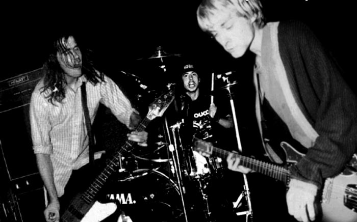
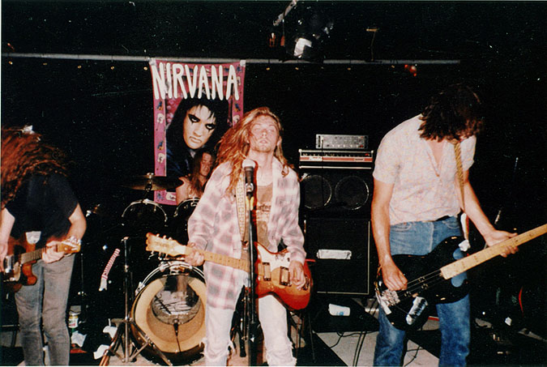

Home
Career
Top 5
Discography
Video
Nirvana released its first single, "Love Buzz", in November 1988 on the Seattle independent record label Sub Pop. The following month, the band began recording its debut album, Bleach, with local producer Jack Endino. Bleach was highly influenced by the heavy dirge-rock of the Melvins and Mudhoney, 1980s punk rock, and the 1970s heavy metal of Black Sabbath. Novoselic said in a 2001 interview with Rolling Stone that the band had played a tape in their van while on tour that had an album by The Smithereens on one side and an album by the black metal band Celtic Frost on the other, and noted that the combination probably played an influence as well. The money for the recording sessions for Bleach, listed as $606.17 on the album sleeve, was supplied by Jason Everman, who was subsequently brought into the band as the second guitarist. Though Everman did not actually play on the album, he received a credit on Bleach because, according to Novoselic, they "wanted to make him feel more at home in the band". Just prior to the album's release, Nirvana insisted on signing an extended contract with Sub Pop, making the band the first to do so with the label.

Following the release of Bleach in June 1989, Nirvana embarked on its first national tour, and the album became a favorite of college radio stations. Due to increasing dissatisfaction with Everman over the course of the tour, Nirvana canceled the last few dates and drove back to Washington. No one told Everman he was fired at the time, while Everman later claimed that he actually quit the group. Although Sub Pop did not promote Bleach as much as other releases, it was a steady seller, and had initial sales of 40,000 copies. However, Cobain was upset by the label's lack of promotion and distribution for the album. In late 1989, the band recorded the Blew EP with producer Steve Fisk.

In a late 1989 interview, Cobain noted that the band's music was changing. He said, "The early songs were really angry ... But as time goes on the songs are getting poppier and poppier as I get happier and happier. The songs are now about conflicts in relationships, emotional things with other human beings". In April 1990, the band began working with producer Butch Vig at Smart Studios in Madison, Wisconsin on recordings for the follow-up to Bleach. During the sessions, Cobain and Novoselic became disenchanted with Channing's drumming, and Channing expressed frustration at not being actively involved in songwriting. As bootlegs of Nirvana's demos with Vig began to circulate in the music industry and draw attention from major labels, Channing left the band. That July, the band recorded the single "Sliver" with Mudhoney drummer Dan Peters. Nirvana asked Dale Crover to fill in on drums for a seven-date American West Coast tour with Sonic Youth that August.
Dave Grohl performing in 1991
In September 1990, Buzz Osborne of the Melvins introduced the band to Dave Grohl, who was looking for a new band following the sudden break-up of Washington, D.C., hardcore punks Scream. A few days after arriving in Seattle, Novoselic and Cobain auditioned Grohl, with Novoselic later stating, "We knew in two minutes that he was the right drummer". "I remember being in the same room with them and thinking, What? That's Nirvana? Are you kidding?" Grohl told Q. "Because on their record cover they looked like psycho lumberjacks… I was like, What, that little dude and that big motherfucker? You're kidding me. I laughed. I was like, No way.